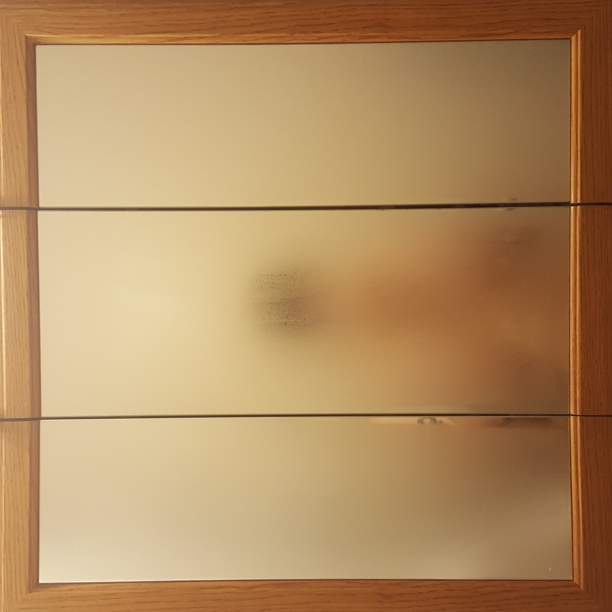
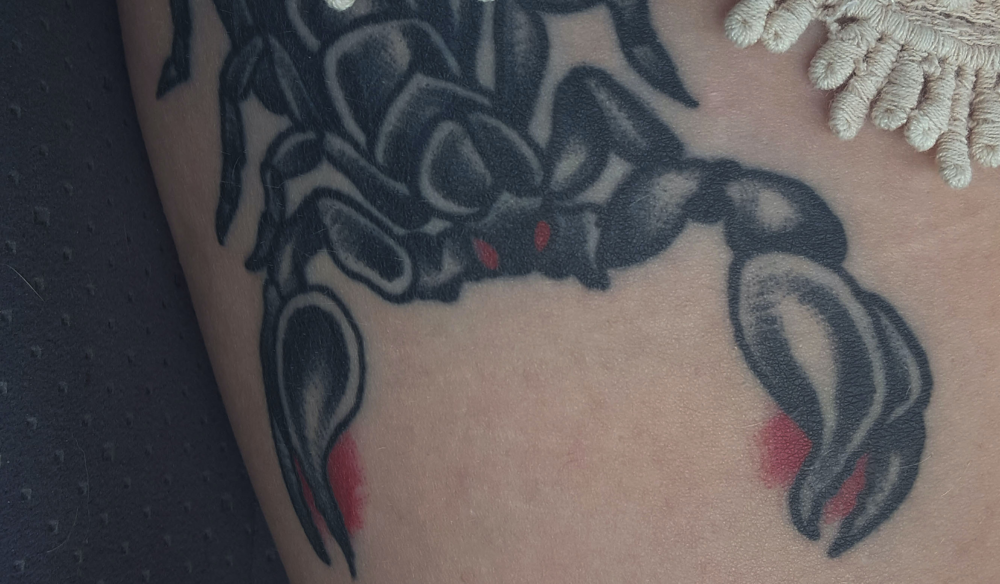
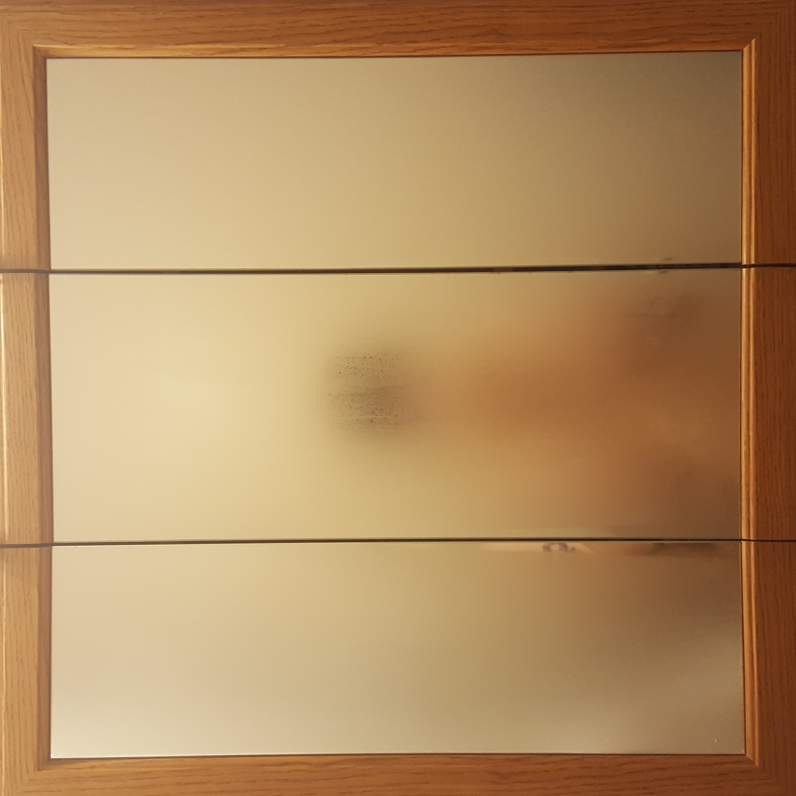
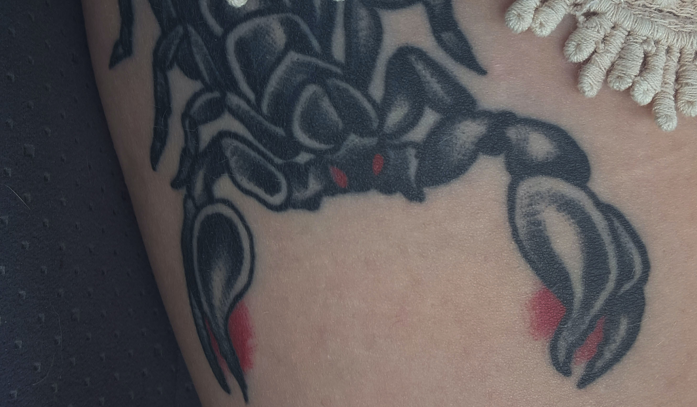

Contemplating Recovery
A journey from near-death to self discovery
It is the start of May, 2021, and my room is a mess. I've pulled out every piece of art from therapy, every journal from my hospitalizations, and my DBT binder. External harddrives and cloud storage are raked through for every morsel of my writing. We don't necessarily take a lot of time to look back. At the start of recovery it felt like looking back and reflecting on my past was all I did. The thing about getting better is you can stop focusing on the past.
For the first time in years I pull out the thick binder from my 48-week out-patient Dialectical Behavioral Therapy program and flip through every page. Five sections of typed handouts covered in notes and doodles on the margins. A whole section of diary cards. For over a year I tracked every day how I felt. What medications I took prescribed or over the counter. If I did any street drugs or drank any alcohol. Ratings on a scale from 1-5 of my suicidal ideation, misery, and urge to self harm. Whether or not I acted on that urge. And room for custom columns to track. For me we track if I pertook in any disordered eating behaviors. Looking back I can see the process of recovery in numbers. Cards where the numbers start high and all the time and card by card, week by week, the high numbers dissapear and my ratings are mostly 0's.
This page is a collection of writings, old and new. Photos from the back of my camera roll. And doodles taken straight from the pages of my binder. It's a look inside my thoughts past and present. An invitation to travel with me on the journey of my recovery.


 


